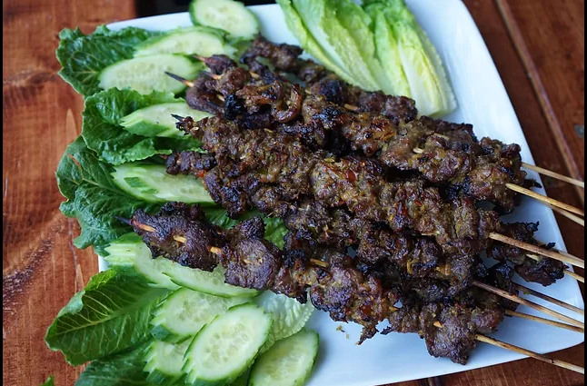

Cambodian Beef Sticks

Grilled lemongrass beef skewers known as Sach Ko Jakak in Khmer is marinated with a signature base known as kroueng. Kroueng is a paste commonly used in most Cambodian dishes and made up of lemongrass, galangal, tumeric powder, garlic and kaffir lime leaves all pounded together in a mortar and pestle to form a paste.
Ingredients
- 1 lb beef, preferably tri-tip
- 1/4 cup lemongrass, chopped
- 1 tablespoon lime zest, grated
- 1 head garlic, peeled
- 1 teaspoon turmeric
- 1 piece galangal, about 1 1/2-inches long, chopped
- 1/2 cup vegetable oil, divided use
- 5 tablespoons oyster sauce
- 3 tablespoons sugar
- 1 1/2 tablespoons paprika
- 1 kiwi
- 8 bamboo skewers, soaked in water
Steps
- Slice beef on diagonal into thin strips, 1/8- to 1/4-inch thick.
- Place lemongrass, lime zest, garlic, turmeric and galangal in food processor or blender and grind to paste. Stir in 3 tablespoons oil. Place 2 tablespoons of spice mixture in bowl large enough to marinate meat. Add oyster sauce, sugar and paprika. Mix and taste, correcting seasoning to your preference. Cut kiwi in half. Remove flesh from one half and mash to a paste. Stir into marinade. Add beef strips; stir. Cover and refrigerate 3 hours.
- Start coals and burn until coals begin to glow or turn gas grill to medium heat. Thread beef onto skewers. Grill until well browned, 5-6 minutes per side.
Back to main page.